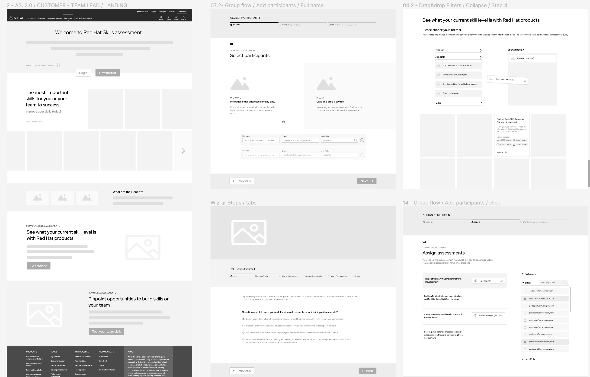
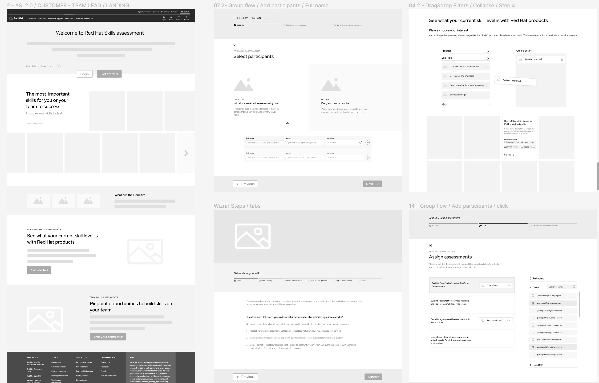

Skills Assessment
Red Hat enterprise clients struggled to fully utilize their cloud solutions. They lacked visibility into their teams' technical skills, making it difficult to pinpoint gaps and deliver training that drove adoption.
We launched the Skills Assessment app, a personalized training recommendation tool that led to a 15% increase in training and certification sales and achieved more than 10,000+ monthly active users, improving cloud solution adoption and productivity across Red Hat clients teams.
I led the research, UX and UI design for the the new Skills Assessment product, collaborating across four key Red Hat teams: Sales, Marketing, Curriculum, and RHLS (the learning platform team I was part of)
My role included facilitating cross-functional workshops with team members, conducting user interviews to understand user needs and ensure the user's voice was central to our design decisions. I came up with a clear concept for how we would move forward with implementation, by working very closely with a team of 12 engineers making sure the design solutions met with technical constraints
The SA app was officially launched in June
2023.
Within the
first month, Red Hat learning
subscription sales
increased over 15%. Since then achieves more than 10,000
monthly visits (MAU).
My design process is typically iterative and user-centered. I start by conducting user research to understand the needs and pain points of the users. This helps me to define the problem and develop the user personas. I then ideate and brainstorm possible solutions, creating wireframes and prototypes to test with users and stakeholders. I iterate on the design based on user feedback until We’re satisfied that the solution is user-friendly and meets the needs of the target users.
Through workshops, surveys, and interviews, with final users and Sales, Marketing, Curriculum, and Engineering teams, We identified opportunities such as centralized reporting, upselling via skill gap visibility and flexible assessment creation.
The Curriculum team had initiated the definition of business requirements, documented on an extensive spreadsheet. My initial task during this phase involved analyzing and validating the requirements to align them with user needs. I conducted workshops with key stakeholders from Marketing, Sales and Engineering to gather insights into business goals and technical requirements. These sessions facilitated collaboration and alignment among teams.
We defined three core personas: technical managers, developers, and internal Red Hat users. I created tailored user journeys to meet each persona's needs and goals within the system.
Utilizing insights gathered from previous phase, I created detailed user personas representing different segments of our target audience:
These three personas helped us empathize with users, understand their motivations, goals and pain points, guiding the design decisions. This led me to conceptualize three different user journeys tailored to meet the specific needs of each persona type.
 Scroll up ↑
Scroll up ↑
I delivered wireframes, flows, and high-fidelity mockups. I worked closely with developers to ensure technical feasibility and proper component implementation using Red Hat's design system.
The User persona definition led me to conceptualize three different user journeys tailored to meet the specific needs of each persona type.
Throughout this phase, I collaborated very closely with the technical team. These prototypes and wireframes served as valuable tools for clarifying requirements, facilitating collaboration, gathering feedback and optimising the development process.
We realized the importance of the internal user flow.
building a SaaS B2C solution, we initially underestimated the potential and impact of the internal user flow. During this phase it became clear that optimizing this aspect could have an direct impact into the sales team performance.
During wireframing phase, my core responsibility was to outline the structure and layout of the user interface ensuring clarity in navigation on the overall user experience, considering the user journeys previously defined.
Throughout this phase, I collaborated very closely with the technical team. These prototypes and wireframes served as valuable tools for clarifying requirements, facilitating collaboration, gathering feedback and optimising the development process.
 

At this critical stage, I meticulously incorporated Red Hat's design principles, visual elements and brand aesthetics into the user interface, aiming to maintain a cohesive and recognizable brand identity.
I crafted intuitive and visually appealing UI components that not only aligned with Red Hat's design standards but also inspired a sense of trust and familiarity among users, reinforcing the Red Hat brand in every interaction.


I methodically crafted detailed high-fidelity mockups in Figma that served as a visual guide, providing the development team with a clear blueprint for the implementation phase. My attention to detail played a vital role in bringing the SA app's user interface to life, ensuring a visually compelling and user-friendly end product.
Insight 2 Support dynamic filtering allowing users to select skills for different roles, making assessments more relevant and efficient.


Insight 1 Offer an report that shows the client's skill gaps and also works as a sales presentation.
Insight 3 Provide enough flexibility to allow the same question to appear in different assessments, to optimise assessments creation and maintenance.
Insight 5 Provide tools for developers, like a YAML editor and React Flow integration, to accelerate development.
We ran usability tests with two user groups. Their feedback led to several design tweaks, particularly improving filtering UX and layout clarity. The collaboration between teams ensured that user experience matched business needs.
Prior to implementation, I conducted usability testing sessions with two focus users groups. By observing participants' interactions with prototypes and collecting feedback through structured tasks and open-ended questions, I identified a couple of usability concers like complex iteraction while filtering user's interests for the assessment . Iteratively I refined the design based on user feedback.
I was very intrigued to see that the pain points and features previously definend were solved in the prototype. It was interesting to see how the collaboration between the engineering and design tem lead to an app that not only meets technical standards but also delivers an optimised user experience. Visit SA live →
Within the first month after launching Skills Assessments, Red Hat learning subscription sales increased over 15%. Since then achieves more than 10,000 monthly visits (MAU).